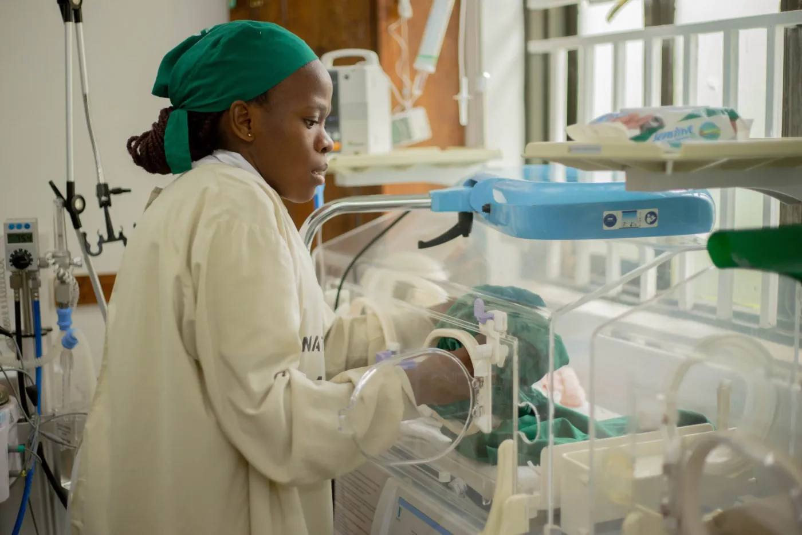
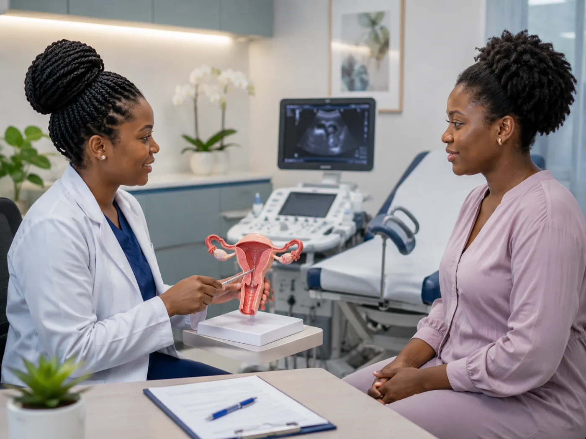
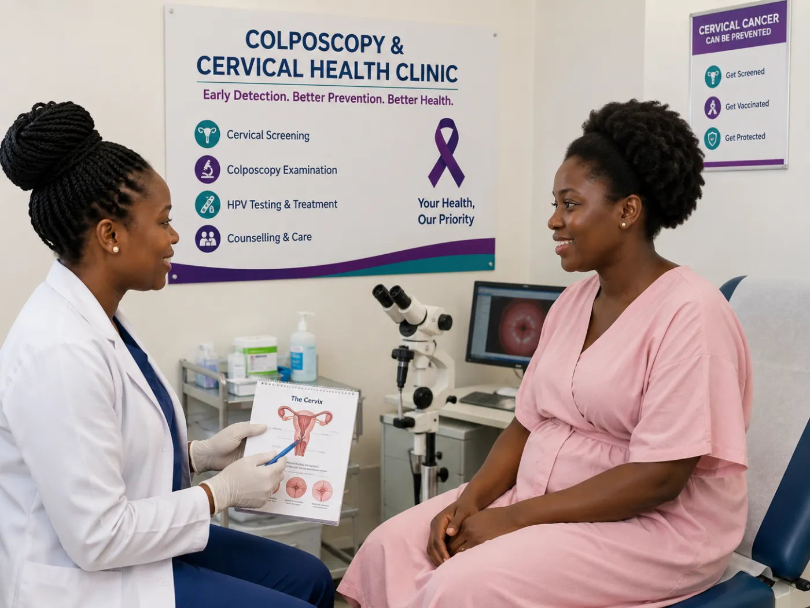
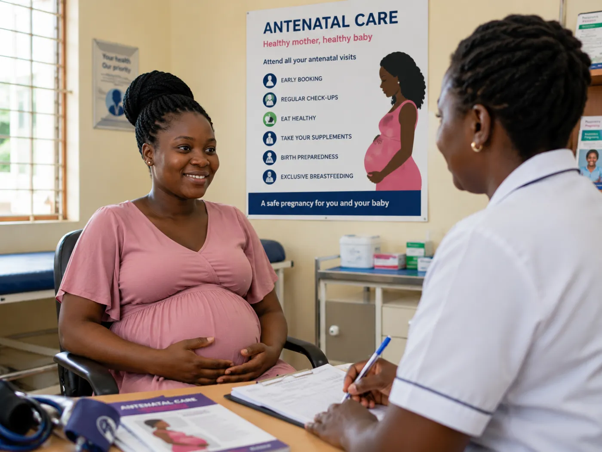
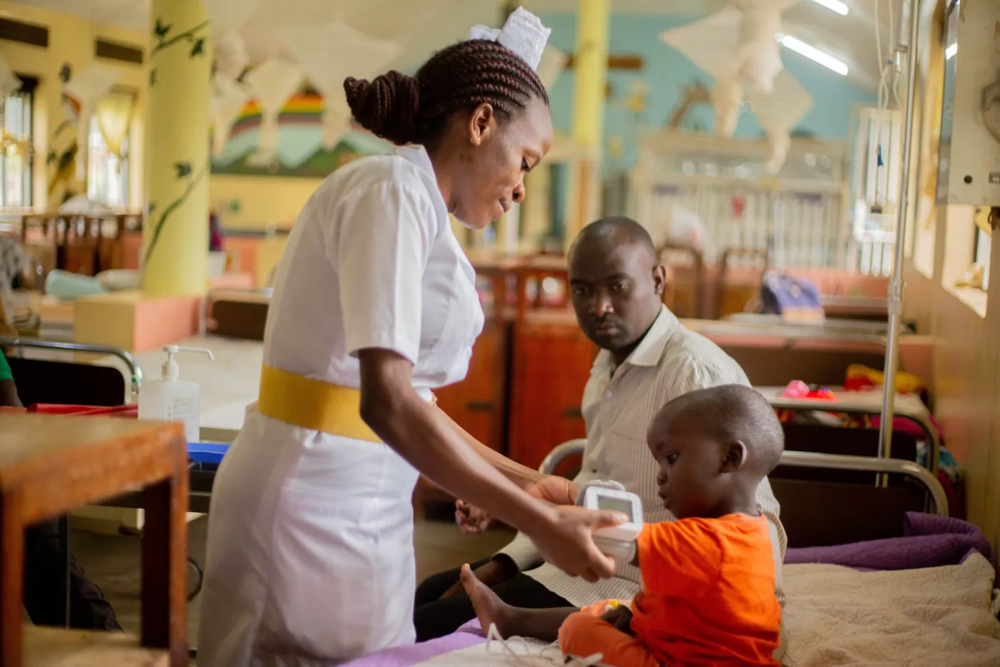
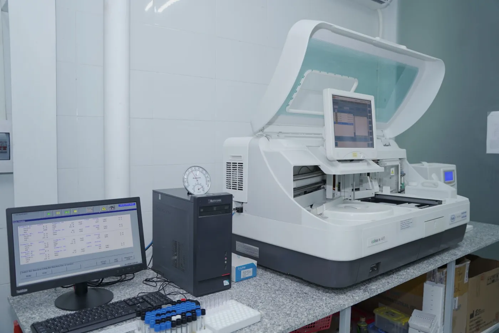

Fertility & IVF
Personalised, evidence-based fertility care — from first assessment to IVF — for individuals and couples.
More details about Fertility & IVFExplore our services for women, individuals and families. If you’re unsure, our team will help you find your next step.
Showing all 10 services
No services match that search. Try another word, or ask our team to guide you.
Helping you build your family

Personalised, evidence-based fertility care — from first assessment to IVF — for individuals and couples.
More details about Fertility & IVFExpert diagnosis and treatment of hormonal conditions affecting fertility, periods and overall wellbeing.
More details about Reproductive Endocrinology & Hormonal HealthSpecialist care for women's conditions
Diagnosis and treatment of fibroids using fertility-preserving and minimally invasive options.
More details about Fibroid Centre
Specialist care for endometriosis, adenomyosis and persistent pelvic pain, preserving fertility wherever possible.
More details about Endometriosis & Chronic Pelvic Pain CentreLaparoscopic and hysteroscopic surgery: smaller scars, less pain and a quicker return to normal life.
More details about Minimally Invasive Gynaecological Surgery
Cervical screening, HPV testing and treatment of abnormal cells, in a private and comfortable setting.
More details about Colposcopy & Cervical Health ClinicCare through every stage of life

Personalised care for you and your baby, from planning a pregnancy through delivery and beyond.
More details about Pregnancy & Antenatal CareEveryday healthcare for all ages: check-ups, screening, chronic disease care, vaccinations and more.
More details about Family Medicine Centre
Medical and surgical care for newborns, children and adolescents in a child-friendly setting.
More details about Paediatric Medicine & Surgery CentreInformation to help plan your care

Ultrasound and laboratory services with timely, reliable results.
More details about Diagnostic & Imaging ServicesRequest an appointment, or call us to talk through where to start.